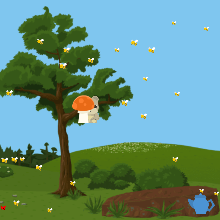

Apps
Games

Chatbot
My Inspiration


My dad has often told me the story of the first words I had ever read. It was not out of your typical dr. Seuss storybook. The first words I ever read was the hot sign outside of Krispy Kreme doughnuts letting everyone know that there were hot fresh doughnuts available. Whenever my parents and I would drive around in our car and we passed by a Krispy kreme I would always rise up out of my booster seat and completely turn around yelling “hot sign on!” My parents thought it was hilarious that I figured out how to read the sign when no one ever told me what the sign said and I became excited every time I saw Krispy Kreme doughnuts. As I grew older my parents began teaching how to read more words. One of the books I constantly read when I little was “See Dick and Jane Run.” My mom would always sit with me and helped me read along. It did not take me a long amount of time to figure out how to sound out different words to read them. My only problem with reading was the pictured in the storybook. While reading the story I would become distracted by the pictures and forget what I was actually reading; soon enough I would start making my own words to the story based off what I saw going on in the picture. If the book had a picture of Jane eating lunch, I would make up what Jane possibly could be eating even if the book never mentioned it. This constantly frustrated my mother to eventually she started placing sticky notes on top of pictures so that I would be able to read the story the entire way through. I loved seeing the pictures while I read, as any typical little child would, so we had to make a compromise. After practicing many times with my mother, I finally adjusted to reading without solely concentrating on the pictures and my reading skills continued to develop.